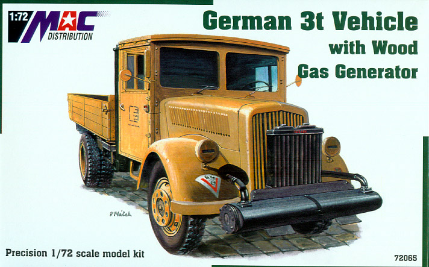
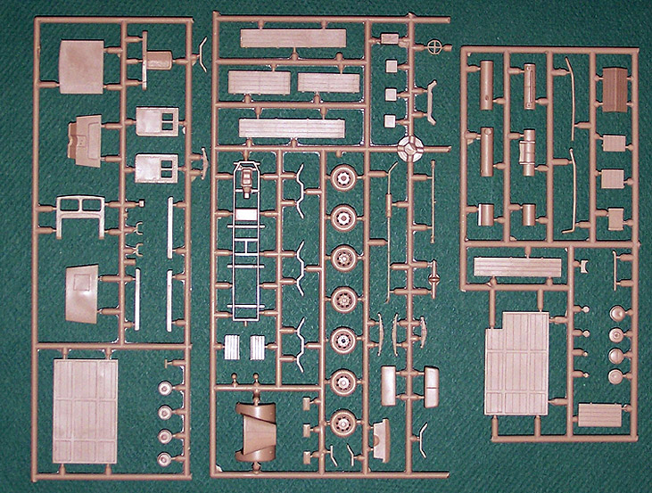
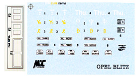
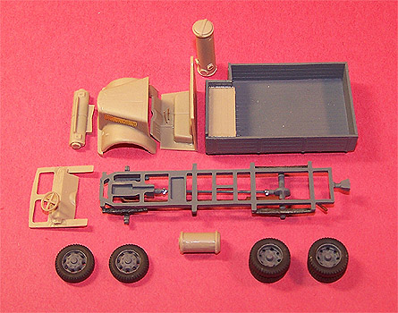
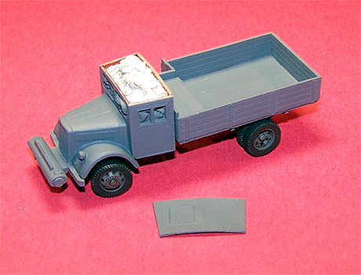
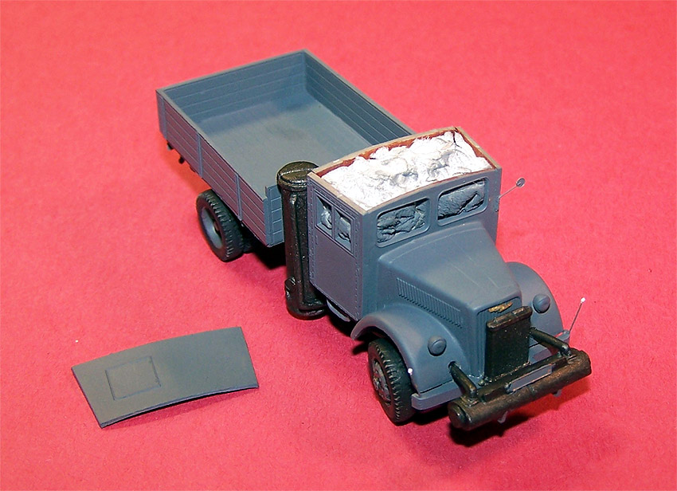
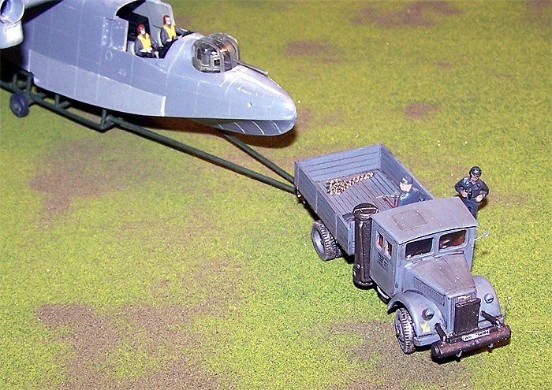
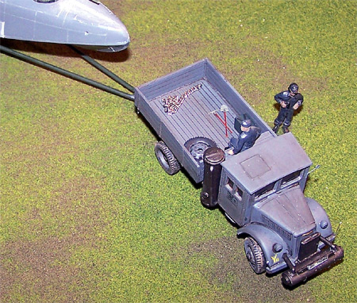
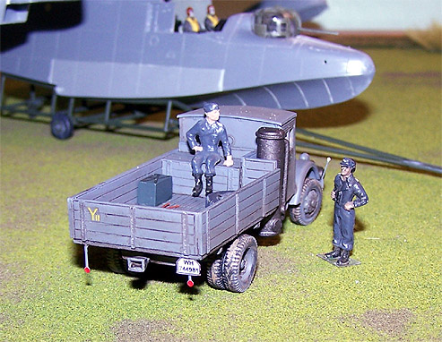
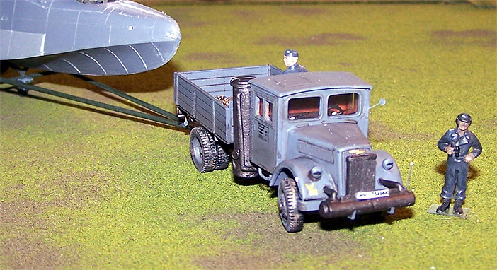

Mac Distribution 3 Ton German Truck
With wood and gas generator.

Kit #72065
MSRP $19.95
Images and text Copyright © 2005 by Matt Swan
Developmental Background
In 1929 the General Motors Corporation acquired the motor firm Adam Opel AG, based in Russelsheim, Germany. In the early 30s Opel introduced the Opel Blitz (lightning) and by 1935 had opened the most modern truck factory in the world in Brandenburg producing this light, dependable truck. Powered by a Buick six cylinder engine the Blitz could handle a considerable payload of up to three tons. In 1940 the German government took control of the company and began producing a wide range of variations to support the Nazi war machine. General Motors was not able to regain control of the company until 1948.
Between 1940 and 1945 over 100,000 Opel Blitz trucks had been produced in many different forms, such as general-purpose trucks, buses, radio trucks, ambulances, and even large limousines for high-ranking officers. Some production versions were built as four-wheel drive vehicles while others (beginning in 1942) were built as half tracks and known as the Maultier (Mule). As the war progressed and steel became scarce many components on the trucks were replaced with wood such as the cab. The Blitz was built as a tanker for refueling aircraft and was also used to support the Messerschmitt Rocket Planes hauling highly volatile fuels.
The Kit

The model arrives in a small box with removable top and nice artwork showing a truck in African desert colors. Inside the box we have three good sized sprues of parts done in a tan high pressure injection molding. We have eighty five pieces here but several of them will not be used for this version. It is obvious that Mac has designed the molds to get as much coverage as possible and there are two or three different versions of this truck available. This particular kit is to build the gas and wood generator version. Included are bed pieces for this version as well as the standard version. All the pieces show nice crisp recessed panel lines, no visible sink marks and no flash.
In addition to the plastic pieces there is a small fret of photo-etched material that covers things like the gear shift, parking brake lever, Opel radiator logo, marker lights, wiper blades, engine side grills for the hood and some small hand tools. Overall there are seventeen PE pieces. There is a small acetate sheet provided to make front and side windows out of and these are marked for the correct size already.
Decals and Instructions
Instructions consist of a full size fold out that includes a good general historical background of the Opel Blitz but tells us nothing of the history of this particular version. General truck specifications are included and all this in English and Czech. There is a complete parts map which is a good thing as none of the parts on the sprue have numbers on them. This map also covers all the PE parts and the kit decals. There are fifteen exploded view construction steps with very few color call-outs and these are by color name only, no RLM numbers or paint code numbers. There is a single half panel that covers exterior painting for two versions, both based on the sand colored scheme.

The decal sheet gives us plenty of unit markings to model several different truck, more than what is shown on the exterior painting guide. Basically all we have here are several license plate sets, six different unit markings and some door specification stamps. Decals are nicely thin; react well to setting solutions and show good print registry and color density.
Construction
I felt the need to build something other than aircraft (it happens) and this kit just looked so good I decided to jump right in. I started with the basic chassis attaching the axels, leaf springs, exhaust system and drive shaft then painted the whole subassembly Panzer Dark Gray. All the wheels were also airbrushed Panzer Dark Gra then the tires were brush painted tire black. The general bed pieces were put together and painted. Thinking ahead I decided right from the start that the last piece to be placed would be the cab roof. This was so I could fill the interior with tissue to protect interior painting then add the clear windows and the roof.
 
Next I worked on the cab painting the interior walls a wood tone and attaching the PE gear shift and brake lever. The dash instruments were covered with some Mike grant instrument faces and the steering wheel was glued in. The seat were put in and painted a dark brown to simulate leather. The remaining cab pieces were glued together and test fit to the chassis. The interior was filled with tissue (taking care to not damage those PE levers) and airbrushed Panzer Dark Gray. Once the cab was glued down the wheels were added. I gave the front tires some angle to them and added some tilt to them as you would see on a front end going into a turn. Next the bed was glued on and holes were drilled in the front fenders for some of the generator plumbing.
These two long pieces of plumbing were probably the toughest pieces to install. The left side went in just fine but the right side pieces took about fifteen minutes of fiddling before it went through the fender. The two tanks for the generator, one large and one small, were assembled, painted burnt iron and installed. The plumbing from the front was connected and I was ready for some PE exterior details. The side grills had been placed earlier and now the side marker lights, side view mirror and radiator logo where superglued in place.


From here the model was sealed with Future and the decals were placed then sealed again with Future. Once this had dried the model was washed with a standard sludge wash then sealed with Polly Scale clear flat. Some final weathering touched were added by dry brushing some raised areas around the body and the wheel lugs with silver enamel. Lastly some ground pastel chalks were rubbed over areas of the model using a women’s makeup swab.
The kit includes a spare tire and wheel, these were painted up and tossed in the back along with the PE tools and a piece of chain I found at the crafts store. A couple of 1/72 scale figures were commandeered to pose with the model. I think this kit works well with stuff like my Bv-138 Clog as the tow vehicle and can stand in with any 1/72 scale diorama.
Conclusions
I have about five days involved in assembling and painting this kit. The parts fit together very well; little clean-up work was needed. The only areas that gave me any trouble were inserting the generator plumbing through the fenders and the exhaust pipe snapped in half when I was removing it from the sprue. This kit is fairly new to the market and as such, there is nothing yet on the aftermarket for it. At this point I don’t really see what could be added to improve the model.


